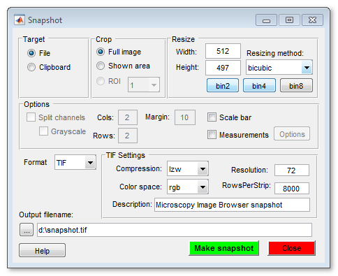
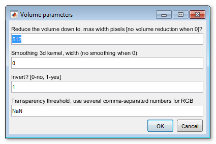

File Menu
Provides access to some file handling actions for image dataset
Back to Index --> User Guide --> Menu
Contents

Import image from...
- Matlab - import image from the main Matlab workspace into im_browser. It is possible to provide image description containers.Map together with the dataset, which allows to maintain parameters of the dataset when using the Export image command (see below). [*brief demo*]
- Clipboard - paste image from the system clipboard. This functionality is implemented using IMCLIPBOARD function by Jiro Doke, MathWorks, 2010. [*brief demo*]
- Imaris - import dataset from Imaris; requires Imaris and ImarisXT. This functionality is done with IceImarisConnector written by Aaron C. Ponti, ETH Zurich. [*demo*]
- URL - open image from provided URL address. The link should contain the protocol type (e.g., http://). [*brief demo*]
OMERO Import
Establish connection and load images from OMERO server. Requires OMERO server files to be downloaded. Please refer to the System Requirements pages for details of installation.
Selection of a server (please do not copy/paste the password!):

In the following dialog it is possible to select desired dataset and the range to take

A brief demonstration is available in the following video:
 https://youtu.be/iR7OL0eJGuw
https://youtu.be/iR7OL0eJGuw
Batch processing...
With the batch processing mode many of the image processing operations may be designed into an image processing workflow, which may automatically applied to multiple images.
Please refer to the Batch processing... section for details.
Chopped images...
This is a special mode that allows to split a large dataset into defined number of smaller ones and combine them back later. It is also possible to fuse the previously cropped dataset to the bigger one.
Please refer to the Chopped images... section for details.
Rename and shuffle
Two tools placed under this menu entry allow to shuffle files for their blind modeling, when the user does not know which file belong to which condition. The models from the shuffled files can be converted back over the original filenames for analysis.
Please refer to the Rename and shuffle section for details.
Export image to
Export images to the main Matlab workspace or Imaris.
- Matlab
In addition to the image
variable, another variable with parameters of the dataset (containers.Map class) is
automatically created. This |containers.Map| can be imported back to |MIB| later together
with the modified dataset to restore parameters of the dataset.
A brief demonstration on Import/Export is available in the following video:
https://youtu.be/zUJ1RUuTLVs
- Imaris
When Imaris is installed, the images can also be exported to Imaris.
Save image as
Save the open dataset to a disk. The following image formats are implemented:
- AM, Amira Mesh - as Amira Mesh binary format
- JPEG, Joint Photographic Experts Group - a method for saving lossy compressed RGB datasets
- HDF5, Hierarchical Data Format - saves images in the Hierarchical Data Format, version 5
- MRC, MRC format for IMOD - saves images in the MRC Format compatible with IMOD
- NRRD, Nearly Raw Raster Data - a data format compatible with 3D slicer
- PNG, Portable Network Graphics (*.png) - saves images in the Portable Network Graphics format
- TIF format, LZW compressed, as a multilayered tif-file (3D-Tif option) or as a sequence of tif-files (Sequence of 2D files). Please note! the TIF format uses 32-bit offsets, and that, in practice, limits the maximal size of the TIF-files to 2Gb. Matlab can create TIF files larger than 2Gb but those can't be opened later
- TIF format, non-compressed, see above for details of saving datasets in the TIF format
Make movie
Save dataset as a movie file. All objects that are shown in the image view window will be captured. Note! If the image width is too small the scale bar is not rendered. See more here.

Make snapshot
Make snapshot of the current slice. All objects that are shown in the image view window will be captured. See more here.

Render volume
3D visualization of volumes is available using 3 different ways:
MIB rendering
Starting from MIB (version 2.5) and Matlab R2018b the volumes can be directly visualized in MIB using hardware accelerated volume rendering engine. The datasets for visuzalization can be downsampled during the export. It is possible to make snapshots and animations.
Limitations:
- One volume at the time
- Only grayscaled 3D data, i.e. a single color channel
- Scale bar is not yet available
A brief demonstration is available in the following video:
https://youtu.be/J70V33f7bas
Matlab Volume Viewer
When MIB is used with Matlab R2017a or newer it is possible to export the open dataset to Volume Viewer application. Please note that this feature is not available for the compliled version of MIB
A brief demonstration is available in the following video:
https://youtu.be/J70V33f7bas
Fiji 3D viewer
Please refer to details in the Microscopy Image Browser System Requirements Fiji section for installation of Fiji.
A brief demonstration is available in the following video:
https://youtu.be/DZ1Tj3Fh2HM
Additional dialog prompts for extra parameters for rendering:

- Reduce the volume down to, max width pixels - allows to reduce size of the dataset prior the rendering. This reduces memory consumption and improves performance. When this field contains 0 no volume resizing occurs.
- Smoothing 3d kernel, width - smooth the volume with gaussian blur. No smoothing when 0.
- Invert? [0-no, 1-yes] - invert the dataset, required for electron microscopy images.
- Transparency threshold - all pixels with intensities below the provided value will appear transparent. Comma-separated numbers may be used here to provide specific transparency parameters for each color channel. In addition, the transparency threshold can also be tweaked in the Fiji 3D viewer window: 3D Viewer->Edit->Attributes->Adjust threshold.
Preferences
View and edit preferences of Microscopy Image Browser. Allows to modify colors of the Selection, Model and Mask layers, default behaviour of the mouse wheel and keys, settings of Undo. See more...
Please note, MIB stores its configuration parameters in a file that is automatically generated after closing of MIB:
- for Windows - C:\Users\Username\Matlab\mib.mat or in the Windows TEMP directory (C:\Users\User-name\AppData\Local\Temp\). The TEMP directory can be found and accessed with Windows->Start button->%TEMP% command
- for Linux - /home/username/Matlab or local TEMP directory
- for MacOS - /Users/username/Matlab or local TEMP directory
Back to Index --> User Guide --> Menu